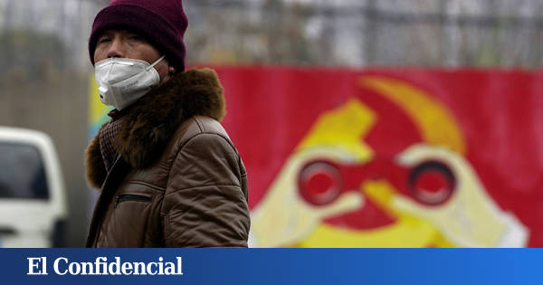
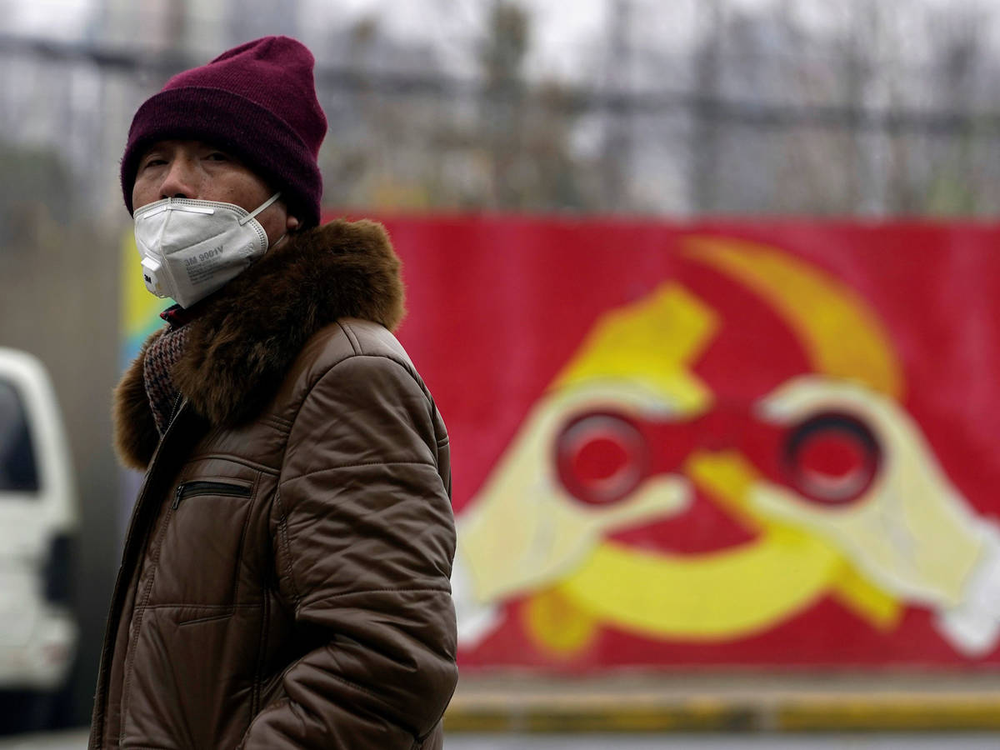
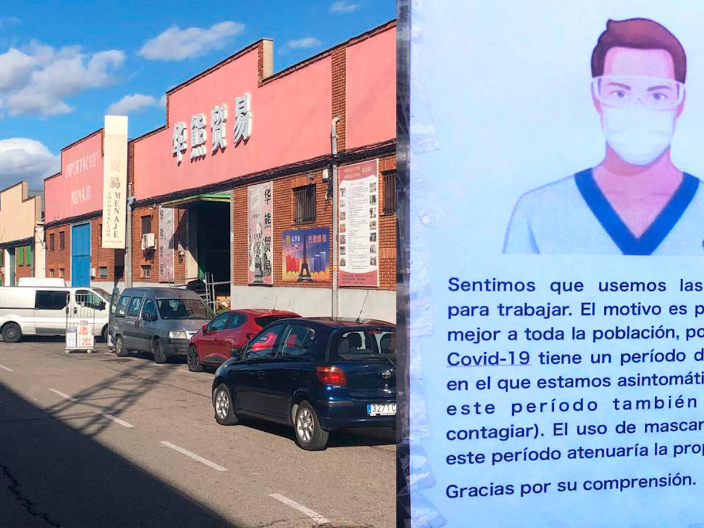
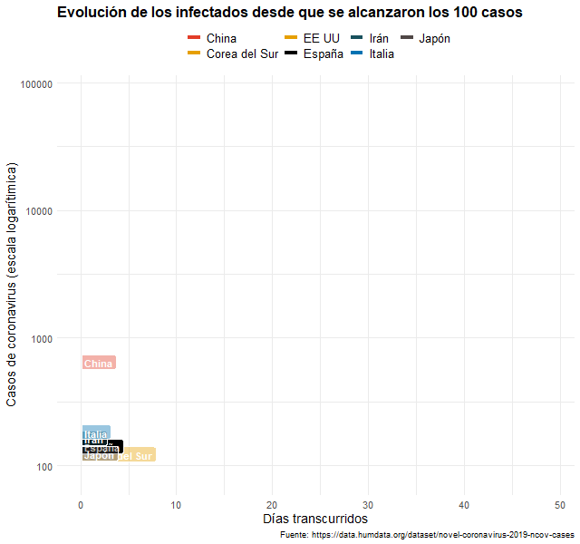
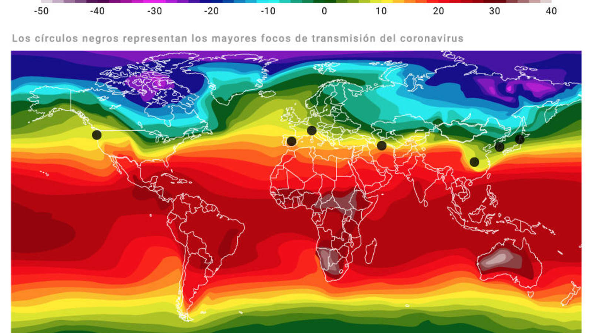
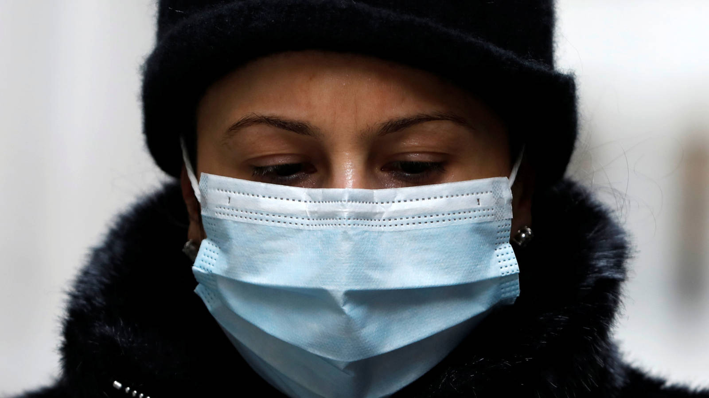

Tras los pasos del paciente cero: así fue el primer contagio del coronavirus en China


Quién fue el paciente cero del coronavirus es una pregunta que quizás nunca obtenga respuesta, pero el rastro de los contagios ha llevado a China muy cerca de él.El primer caso conocido de COVID-19 —denominación que aún no tenía cuando campaba a sus anchas por Wuhan— tuvo lugar el pasado 17 de noviembre y la víctima más antigua de la que se tiene constancia es una persona de 55 años natural de Hubei, según una investigación del periódico hongkonés 'South China Morning Post' basada en datos gubernamentales.
Con él, fueron nueve las víctimas detectadas —cuatro hombres y cinco mujeres— antes de que la propagación del virus se descontrolase.El goteo de contagios diarios se multiplicó desde entonces: para el 15 de diciembre, tres días después de la fecha en que hasta ahora se situaba el origen de la epidemia, el número de infectados ya rozaba la treintena, mientras que para el 20 de diciembre la cifra se había doblado hasta alcanzar los 60 casos.Apenas pasó un mes antes de que China declarara el nivel máximo de alerta sanitaria.
Ninguno de los primeros nueve contagiados habría sido el portador original del virus, pues es posible que 'incluso haya casos detectados antes', apunta el rotativo.Las nueve víctimas tenían entre 39 y 79 años y, aunque se desconoce cuántos de ellos residían en Wuhan, la megalópolis considerada el foco del brote, se cree que todos ellos tenían en común la asistencia a un mercado de animales exóticos donde el microorganismo pudo saltar a un huésped humano y después mutar para propagarse entre las personas.

Las autoridades locales habrían identificado a, al menos, 266 personas infectadas durante 2019 y, a comienzos del nuevo año, ya sumaban 381, si bien la Comisión de Salud Municipal de Wuhan no informó del primer caso hasta el 5 de enero.Por su parte, el Gobierno chino no trasladó a la Organización Mundial de la Salud (OMS) lo que sabía sobre la 'nueva neumonía' hasta el día 31 de diciembre.
Ya por entonces había voces críticas que denunciaban la opacidad de los datos, como la de Zhang Jixian, un médico del Hospital Provincial de Medicina Integrada China y Occidental de Hubei que había advertido de que estos primeros pacientes padecían un coronavirus; o la del oftalmólogo Li Wenliang, que tras advertir la entrada de pacientes con un síndrome parecido al SARS (un coronavirus que en 2003 causó estragos a nivel mundial) recibió la orden de 'no hacer comentarios falsos' por parte de la Oficina de Seguridad Pública de China.
'Le advertimos solemnemente: si sigue siendo terco e impertinente, y continúa con esta actividad ilegal, será llevado ante la Justicia, ¿se entiende?', podía leerse en la carta que le obligaron a firmar y que el doctor hizo pública a través de Weibo, el Twitter chino.

Como las autoridades insistían en que el virus sólo se contagiaba a través de los animales, a los médicos no les dieron instrucciones para protegerse, por lo que Li siguió pasando consulta con normalidad.Una semana después de que recibiera la visita de la policía, tuvo que tratar a una mujer que sufría glaucoma y que, sin que él lo supiera, portaba el coronavirus.El 10 de enero, el especialista empezó a toser, al día siguiente tuvo fiebre, y dos días más tarde estaba ingresado en el hospital.Murió en la madrugada del 7 de febrero a la edad de 34 años.
Posted On: 2020-03-13T13:00:00


Content Date: 2020-03-13
Download Date: 2021-04-21
Document ID: L0C04AOY9